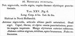

Click on images to enlarge
{kind=link}

Notoclea punctata, description
Name
Trachymela punctata (Marsham, 1808)
Type specimen
Not examined.
Original description
[Original description shown in figure, translated from Latin using ChatGPT]
Blackish-red; eyes black; head, thorax, and elytra very densely punctured.
Plate XXV, Fig. 6.
Body length 4 lines (~8.5 mm), width 2½ lines (~5.3 mm).
Occurs in New Holland (Australia).
Antennae blackish-red, the last segment slightly darker. Eyes black. Head, thorax, and elytra all very densely punctured, with rather large impressed punctures. Outer margin of the elytra reddish. Abdomen beneath black, shining, with the tip brown. Legs reddish.
Notes
There is much doubt surrounding the name punctata (Marsham). Marsham’s species are all from eastern Australia (C.A.M. Reid, pers. comm.) and this should apply to punctata. Marsham’s short description could apply to many Trachymela species. I have not seen a specimen that is clearly a type, but in the BMNH collection there is a specimen labelled as punctata that may be attributable to Marsham. It seems to be a typical Ta24. The specimen has no locality information. However, a specimen in the Chapuis Collection (RBINS) is labelled “P. punctata Marsh.” (by Chapuis) and in addition carries a label “Trachymela punctata Mrsh. Det M. Daccordi 2007”. This specimen is from Tasmania and is clearly not Ta24 but is, in fact, Ta42, T. papulosa (Erichson). Its identification is almost certainly incorrect - the original description by Marsham makes no mention of verrucae on the elytra.
Blackburn may have had access to the Marsham types, though note his statement on p. 644 of his revision: "Mr. Masters ... regarding types in the Macleay Museum ... has done me the great favour of sending me specimens carefully compared with those types". Presumably, those types included all or some Marsham specimens, and it is certainly possible that Blackburn did not see the actual type of punctata himself (even though he does not italicize the name in his key, as he usually does for species whose type he has not examined). In any case, Blackburn included what he believed to be punctata in his key, and several of its characters agree neither with those of Ta24 nor of Ta42. For example, Blackburn refers to it having a coarsely punctured scutellum (p. 674), which is not so for either Ta24 or Ta42. In his description of P. sylvicola, he notes that that species "resembles P. punctata, Marsh.", which further indicates that he was looking at a specimen that was neither Ta24 or Ta42.
Weise, in the Coleoptorum Catalogus, lists punctata as occurring in S. and W. Australia and Victoria, but it is not clear whether Weise examined Marsham's type. What is clear is that there has been much confusion around the name punctata.
References
Marsham, T. 1808, "Description of Notoclea, a new genus of coleopterous insect from New Holland", Transactions of the Linnean Society of London, vol. 9, 283-295 (page 292).
Copyright © 2026. All rights reserved.